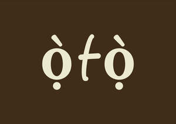

Trade Mark Journal No.2025/034 22 August 2025
UK00004238548 23 July 2025 (8,20,21,24)

- Class 8
- Spoons being tableware; Knives being tableware; Forks being tableware; Cutlery; Tableware [knives, forks and spoons]; Silverware [cutlery, forks and spoons]; Table cutlery [knives, forks and spoons]; Forks [cutlery]; Cutlery, Stainless steel table spoons; Spoons; Table knives; Boxes for cutlery [fitted]; Knives, forks and spoons; Forks and spoons; Table knives; Forks; Knife holders; Table forks; Stainless steel table forks; Table knives; Sterling silver table forks; Stainless steel table knives; Tongs [hand tools]; Sterling silver table spoons; .
- Class 20
- Serving trolleys; Serving trolleys [furniture]; Pouffes [furniture]; Table tops; Table legs; Bamboo furniture; Decorative baskets made of wood; Arm rests for furniture; Flower pot stands; Stands for flower pots; Kitchen furniture; Book holders; Cookbook holders; Book holders [furniture]; Fixed napkin dispensers not of metal; Glass furniture; Flower stands [furniture]; Ceramic knobs; ; Statuettes of wood, wax, plaster or plastic; Statues of wood, wax, plaster or plastic; Bottle stoppers, not of glass, metal or rubber; Stoppers for bottles, not of glass, metal or rubber; Wooden sculptures; Ornamental sculptures made of plaster; Sculptures made from plaster; Sculptures made from wood; Sculptures made of plastic; Plaster statues; Works of art of wood, wax, plaster or plastic; Art (Works of -) of wood, wax, plaster or plastic; ; Wood statues; Works of art made of plaster; Carvings of plaster; Plastic statues; Works of art made of wood; Statues made of plaster; Book shelves; Shelves for books; Book rests; Book stands; Book rests [furniture]; Book stands [furniture]; Library shelves; Shelves; Book supports [furniture]; Book supports; Box shelves; Bookshelves; Shelf units [furniture]; Shelves for storage; Show shelves; Folding shelves; Display shelves; Furniture shelves; Shelves [furniture]; Bedding, except linen; Seat covers [shaped] for furniture; Cushions; Covers (Shaped -) for furniture; Fitted fabric furniture covers; Protective covers for furniture [shaped]; Seat cushions; Protective covers for furniture [fitted]; Textile covers [shaped] for furniture; Textile covers [fitted] for furniture; Cushions (upholstery).
- Class 21
- Tableware; Tableware of porcelain; Oven-to-table tableware; Ceramic tableware; Tableware, cookware and containers; Glass tableware; Bone china tableware [other than cutlery]; Coasters (tableware); Dinnerware of porcelain; Dinnerware; Dishware; Scoops [tableware]; Coffee services [tableware]; Decorative chinaware; Glassware; Tableware, other than knives, forks and spoons; Chinaware; Cookware and tableware, except forks, knives and spoons; Crockery; Cutlery trays; Decorative porcelain ware; Crockery made of porcelain; Tea services in the nature of tableware; Porcelain ware; Tableware, except forks, knives and spoons; Coffee services in the nature of tableware; Dishes [household utensils]; Ceramic hollowware; Trivets [table utensils]; Porcelain mugs; Mugs of porcelain; Beverage glassware; Porcelain cake decorations; Figurines [statuettes] of porcelain, ceramic, earthenware or glass; Decorative china; Earthenware mugs; Stemware; Statuettes of porcelain, ceramic, earthenware or glass; China mugs; Mugs of china; Drinkware; Figurines of porcelain, ceramic, earthenware, terra-cotta or glass for cakes; Saucepans (Earthenware -); Earthenware saucepans; Figurines of earthenware; Jewelry dishes; Household or kitchen utensils; Moulds [kitchen utensils]; Figurines of porcelain; Mixing spoons [kitchen utensils]; Kitchen utensils; Household utensils; Figurines of porcelain, ceramic, earthenware, terra-cotta or glass; Porcelain coasters; Porcelain; Cookware; China ornaments; Molds [kitchen utensils]; Figurines of china; China figurines; Commemorative statuary cups of porcelain, ceramic, earthenware, terra-cotta or glass; Aluminium moulds [kitchen utensils]; Prize cups of porcelain, ceramic, earthenware, terra-cotta or glass; Spatulas [kitchen utensils]; Crystal [glassware]; Bakeware; Statues of porcelain, ceramic, earthenware or glass; Statues of porcelain, earthenware, ceramic or glass; Painted glassware; Glassware (Painted -); Statuettes of porcelain, ceramic, earthenware, terra-cotta or glass; Wall decorations of porcelain; Works of art of porcelain, ceramic, earthenware or glass; Earthenware floor vases; Beverageware; Ceramic mugs; Graters [household utensils]; Sieves [household utensils]; Earthenware; Glassware for household purposes; Holloware; Decorative plates; Baking dishes made of porcelain; Bowls for floral decorations; Compostable plates; Mugs made of porcelain; Disposable paperboard bakeware; Drinking mugs made of porcelain; Busts of porcelain, ceramic, earthenware or glass; Ceramic ornaments; Industrial packaging containers of porcelain; Ornamental figurines made of china; Glass dishes; Works of art of porcelain, ceramic, earthenware, terra-cotta or glass; Ornamental figurines made of porcelain; Compostable bowls; Egg separators [kitchen utensils]; Ceramics for kitchen use; Ovenware; Disposable table plates; Plates; Smoothed plate glass; Glass plates; Dessert plates; Table plates; Cake plates; Collector plates; Commemorative plates; Plate glass [raw material]; Souvenir plates; Pillar candle plates; Insulated lids for plates and dishes; Bowls; Soup bowls; Mixing bowls; Salad bowls; Glass bowls; Bowls (Glass -); Shallow bowls; Fruit bowls; Serving bowls; Bowls for candy; Sugar bowls; Fruit bowls of glass; Basins [bowls]; Bowls [basins]; Flower bowls; Pet drinking bowls; Bowls for plants; Mixing spoons; Mixing cups; Sugar bowls of precious metal; Flower bowls of precious metal; Bowls of precious metal; Spoon rests; Sugar bowls [not of precious metal]; Serving scoops [household or kitchen utensil]; Salad tongs; Serving spoons; Saucepan lids; Utensil jars; Cup lids; Bathroom ladles; Rice paddles [cooked rice serving scoops]; Dish brushes; Pot lid racks; Egg cups; Cups (Egg -); Glass cups; Batter dispensers for kitchen use; Cupcake baking cups; Rice scoops; Pot lids; Serving trays; Serving platters; Serving tongs; Serving dishes; Serving pots; Ladles for serving wine; Pasta serving forks; Serving forks; Serving utensils [pastry servers]; Serving utensils [pie servers]; Serving trays made of rattan; Serving trays of precious metalServing trays, not of precious metal; Meal trays; Food preserving jars of glass; Baking dishes made of glass; Dish stands; Baking dishes made of earthenware; Spoon supports; Soap dispensing dish brushes; Dish cloths; Casseroles [dishes]; Vegetable dishes; Baking dishes; Relish dishes; Butter dishes; Dishes (Butter -); Dish drying racks; Roasting dishes; Wall soap dishes; Dishcloths for washing dishes; Shaving dishes; Stands for dishes; Covers for dishes; Skewers (cooking utensil); Coasters other than of paper or of table linen; Mugs made of china; Tablemats, not of paper or textile; Baking utensils; Mugs made of ceramic materials; Picnic baskets (Fitted -), including dishes; Fitted picnic baskets, including dishes; Cookware, except forks, knives and spoons; Knife rests; Knife rests for the table; Bread tongs; Basting spoons; Spaghetti tongs; Jam spoons; Knife boards; Knife blocks; Basting spoons [cooking utensils]; Barbecue forks; Chopsticks; Meat tongs; Sugar tongs; Asparagus tongs; Table napkin holders; Coasters, not of paper and other than table linen; Floor cloths; Bamboo baskets for household purposes; Kitchen utensils, not of precious metal; Napkin holders, not of precious metal; Cake rests; Sugar scoops; Foil food containers; Wooden chopping boards for kitchen use; Spatulas for kitchen use; Cooking pot sets; Pot stands; Flower pot holders; Pot holders; Containers for pot pourri; Pot plant support sticks; Coffee pots; Closures for pot lids; Tea pots; Pots; Cooking pots; Coffee pots not of precious metal; Pot cleaning brushes; Paper cooking pots; Pots (Flower -); Flower pots; Covers, not of paper, for flower pots; Tea pots of precious metal; Glass pots; Incense pots; Jam pots; Non electric coffee pots not of precious metal; Plant pots; Earthen pots; Saucers for flower pots; Porcelain flower pots; Pots for flowers; Coffee pots [non-electric]; Non-electric coffee pots; Shaving pots; Pots for plants; Bases for plant pots; Couscous cooking pots,Stone pots; Pepper pots; Cooking pots and pans [non-electric]; Non-electric cooking pots and pans; Cooking pots [non-electric]; Hot pots, non-electric; Cooking pots for use in microwave ovens; Coffee filters not of paper being part of non-electric coffee makers; Coffee filters, not of paper, being part of non-electric coffee makers; Frying pan lids; Cookware [pots and pans]; Cooking pots, non- electric / Non-electric cooking pots; Mugs made of fine bone china; Turners (kitchen utensil); Cooking utensils; Kitchen utensils of silicon; Cooking pans; Pressure cooking saucepans, non-electric; Non-electric pressure cooking saucepans; Kitchen jars; Kitchen paper holders; Vegetable tongs; Cooking pans [non-electric]; Non-electric cooking pans; Steamers [cookware]; Aluminium cookware; Cooking utensils for use with domestic barbecues; Sifters [household utensils]; Frying pans; Pans (Frying -); Stir-fry pans; Candle holders; Candle jars [holders]; Glass holders for candles; Candle snuffers; Candle holders of precious metal; Candle holders not of precious metal; Candle rings; Incense stick holders; Candle sticks; Candle extinguishers; Napkin holders; Tablecloth holders; Candle holders of wrought iron; Serviette holders; Glass holders; Cup holders; Toothbrush holders; Candle drip rings; Soap holders; Toothpick holders; Candle snuffers, not of precious metal; Sponge holders; Insulating sleeve holder for beverage cups; Hand soap holders; Place card holders; Brush holders; Portable beverage container holders; Candle extinguishers of precious metal; Napkin holders of precious metal; Holders for flowers; Holders for toilet paper; Toilet paper holders; Holders (Toilet paper -); Insulated glass holders; Candle rings of precious metal; Holders for towels; Shower gel holders; Holders for tumblers; Holders for toothbrushes; Holders for brushes; Toilet tissue holders; Shampoo holders; Candle extinguishers, not of precious metal; Liquid soap holders; Menu card holders; Makeup sponge holders; Body cleanser holders; Napkin rings; Napkin dispensers; Serviette rings; Napkin rings of precious metal; Napkin dispensers for household use; Serviette dispensers; Towel rings; Paper hand towel dispensers; Napkin rings, not of precious metal; Paper towel dispensers; Dispensers for paper hand towels; Napkin rings not of precious metals; Paper cups; Dispensers for paper towels; Vases; Flower vases; Glass vases; Ritual flower vases; Bud vases; Glass floor vases; Floor vases; Flower vases of precious metal; Clay floor vases; Stone floor vases; Glass flowerpots; Candlesticks of glass; Glass candlesticks; Busts of porcelain, ceramic, earthenware, terra-cotta or glass; Statues of porcelain, ceramic, earthenware, terra-cotta or glass; Busts of china, terra-cotta or glass; Earthenware jars; Glass ornaments; Figurines of glass; Glass jars; Vases of precious metal; Figurines made of decorative glass; Ornamental figurines made of glass; Flower baskets; Enamelled glass; Containers for flowers; Holders for flowers and plants [flower arranging]; Glass decanters; Ornamental glass; Goblets; Enamelled jars; Decorative boxes of glass; Decorative objects [ornaments] made of glass; Planters of earthenware; Planters of pottery; Planters of glass; Works of art, of porcelain, terra-cotta or glass; Powdered glass for decoration; Sculptures of earthenware; Statuettes of earthenware; ; Statuettes of glass; Glass carafes; Pottery; Stained glass figurines; Boxes of earthenware; Garden gnomes of earthenware; Ornamental sculptures made of glass; Busts of earthenware; Glass mugs; Ornaments made of earthenware; Glass containers; Statues of earthenware; Sculptures of glass; Glass storage jars; Vases not of precious metal; Figurines made of glass; Planters of porcelain; Decorative stained glass; Decorative glass spheres; Ornaments made of glass; Bottle gourds; Gourds (Bottle -); Figurines made of earthenware; Garden gnomes of glass; Statues of glass; Ceramic figurines; Figurines made of ceramic; Sculptures of porcelain; 3D wall art of made of ceramic; Ceramic coin boxes; Statuettes of porcelain; Ornamental sculptures made of porcelain; Signboards of porcelain or glass; Statues, figurines, plaques and works of art, made of materials such as porcelain, terra-cotta or glass, included in the class; Figurines of terracotta; Plaques of earthenware; Figurines made of porcelain; 3D wall art of made of earthenware; Plaques of porcelain; Mugs made of earthenware; 3D wall art of made of porcelain; Ornaments made of porcelain; Plaques of pottery; Candle rings, not of precious metal; Statues of porcelain; Busts of porcelain; Boxes of porcelain; Porcelain signboards; Jardinieres of porcelain; Sculptures made from porcelain; Ornamental models made of porcelain; Ornaments [statues] made of porcelain; Garden gnomes of porcelain; Sculptures of china; Works of art made of porcelain; Statuettes of china; Porcelain articles for decorative purposes; Ornamental sculptures made of china; Statues of china; Boxes of china; Figurines made of bone china; Figurines made of china; Cups made of china; Ornaments made of china; Coffee services of china; Ornamental models made of china; Ornaments [statues] made of china; Teapots; Wine glasses; Glass bottles; Wine decanters; Wine pourers; Wine jugs; Glass stoppers for bottles; Wine bottle cradles; Glass flasks; Glass stoppers; Stoppers (Glass -); Wine chillers; Drinking glass holders; Coolers for wine; Wine coolers; Wine buckets; Opal glass; Glass (Opal -); Wine strainers; Glass jars [carboys]; Wine openers; Glass caps; Glass flasks [containers]; Beer glasses; Whisky glasses; Boxes of glass; Artworks of glass; Wine coasters of precious metal; Pitchers; Creamer pitchers; Beer pitchers; Bottle pourers; Beer jugs; Hand-operated batter dispensers for household use; Carafes; Glasses; Beer mugs; Syrup jugs; Drinking bottles for sports; Bottle openers [hand-operated]; Bottle openers; Margarita glasses; Water bottles; Aluminum water bottles; Decanters; Drinking goblets; Bottle coolers; Tumblers for use as drinking glasses; Liqueur flasks; Tumblers [drinking vessels]; Brushes adapted for cleaning decanters; Drinking bottles; Bottles; Glasses [drinking vessels]; Bottle brushes; Cocktail glasses; Pint glasses; Champagne flutes; Bottle buckets; Liqueur cups; Bottle stands; Vacuum bottles; Schnapps glasses; Hand cut crystal glassware; Sculptures of terracotta; Sculptures of crystal; Sculptures made from glass; Statues of terracotta; Ice sculptures for decorative purposes; 3D wall art made of terra-cotta; Works of art made of earthenware; Works of art made of glass; 3D wall art of made of glass; Sculptures made from terra cotta; Statuettes of terracotta; Statues made of earthenware; Tea cups; Saucepan scourers of metal; Coffee mugs; Coffee cups; Coffee stirrers; Cups made of earthenware; Cups and mugs; Cups; Mugs; Drinking cups; Compostable cups; Cups made of pottery; Mug racks; Silicone baking cups; Paper baking cups; Baking cups of paper; Mug sleeves; Cups of precious metal; Mugs of precious metal; Double wall cups; Mug trees; Coffee scoops; Leather coasters; Coasters, not of paper or textile; Corkscrews; Towel rails; Reusable stainless steel water bottles sold empty; Reusable stainless steel water bottles; Tissue box covers; Ceramic tissue box covers; Covers for tissue boxe s; Saucers made of precious metals; Saucers not of precious metals.
- Class 24
- Tablecloths of textiles; Table napkins of textile; Napkins of textile (Table -); Textile napkins [table linen]; Kitchen and table linens; Textile napkins; Dish towels; Dish towels for drying; Dish cloths of textile for drying; Household cloths for drying dishes; Tablemats of textile; Cloth napkins; Tablecloths of textile; Textile tablecloths; Glass cloths [towels]; Serviettes of textile; Textile serviettes; Kitchen towels of cloth; Coasters [table linen]; Dinner mats of textiles; Kitchen towels [textile]; Kitchen towels of textile; Towels of textiles; Drink coasters of table linen; Tablemats, not of paper; Table cloths of textile; Table cloths; Table cloth of textile; Table linen; Table cloths made of textile; Table cloths not of paper; Table cloths, not of paper; Cloth; Table linen of textile; Table covers of damask; Table linen, not of paper; Linen cloth; Fabric table toppers; Table mats, not of paper; Table mats (not of paper); Table place setting mats of textile; Table covers; Fabric table runners; Cloths; Table coverings [not of paper]; Cloth coasters; Cloth handkerchiefs; Bed linen and table linen; Table mats made of textile materials; Lace table mats not made of paper; Table covers of non-woven textile fabrics; Table covers [not of paper]; Table runners of textile; Bar cloths; Labels of cloth; Cloth labels; Labels [cloth]; Woolen cloth; Silk cloth; Silk [cloth]; Cloth banners; Runners [textile] for table tops; Napkin liners of textile; Towel sheet; Tea towels; Textile coasters; Coasters of textile; Mats [coasters] of textile; Linen; Linen [fabric]; Bed linen; Linen for the bed; Linen (Bed -); Woven linen fabrics; Bath linen; Kitchen linen; Mats of linen; Bed linen of paper; Household linen; Linen (Household -); Textiles made of linen; Bed linen made of non-woven textile material; Linen lining fabric for shoes; Bath linen, except clothing; Fabrics made from linen, other than for insulation; Household linen, including face towels; Towels of textile; Towels [textile]; Towels [of textile]; Cotton cloths; Linen for household purposes; Cotton fabrics; Bed blankets made of cotton; Silk blankets; Silk fabrics for furniture; Bedsheets of leather; Woollen fabric; Labels (Textile -) for identifying linen; Cotton fabric; Silk fabrics; Cotton blankets; Woven silk fabrics; Woollen fabrics; Hand-towels made of textile fabrics; Household linens; Towels [textile] for the beach; Hand towels of textile; Cotton knitted fabric; Textiles made of cotton; Curtains made of textile fabrics; Cushion covers; Covers for cushions; Cushions (Covers for -); Pillow covers; Covers for pillows; Cushion covering materials; Sofa covers; Duvet covers; Chair covers; Covers for mattresses; Bed covers; Quilt covers; Canopy covers; Covers for duvets; Textile piece goods for making cushion covers.
Oluwashayo Okpaise